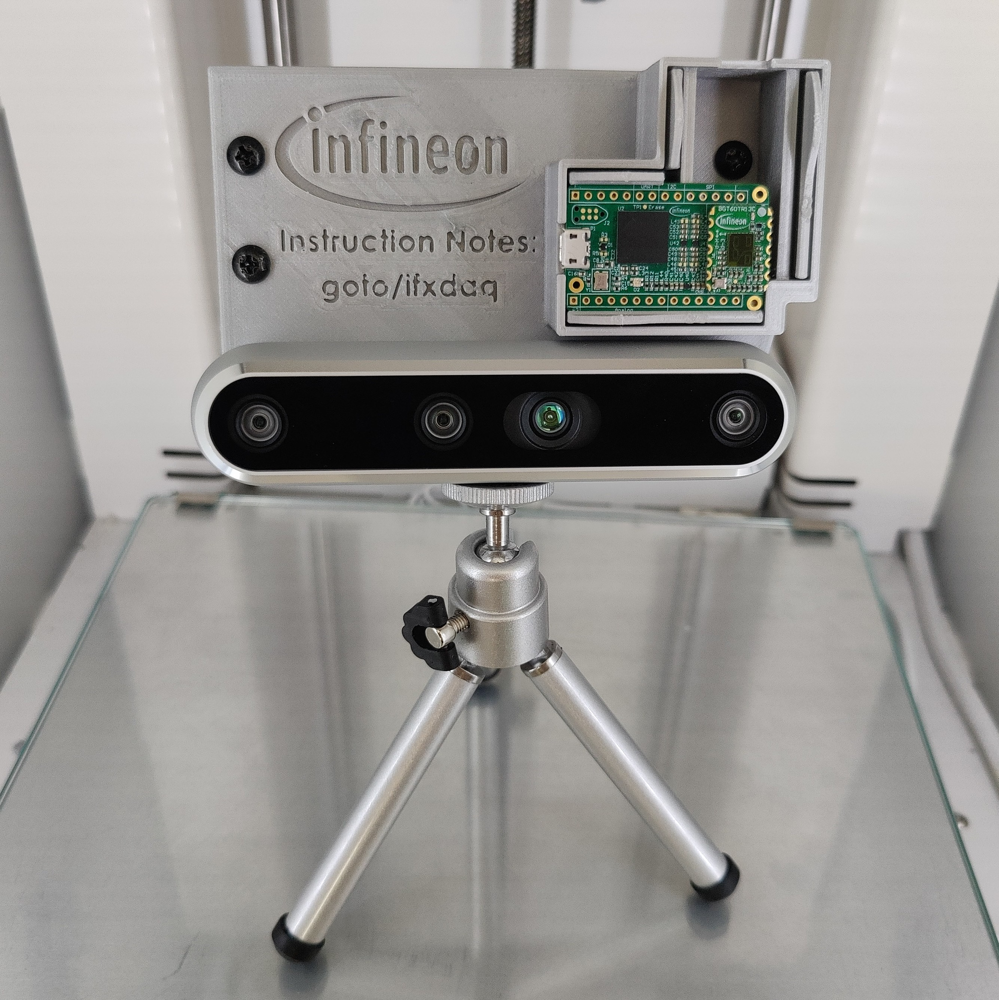

DaqKit
{kind=link}
We provide with DaqKit a setup to mount a camera & a radar sensor together. This can be used to record with both sensors data in parallel. If you encounter any problems during a recording, please refer to the FAQ / Troubleshooting section.
The DaqKit is meant for professional data campaigns. The static mounting of the camera and the radar device ensures an easy to handle setup. Additionally, this ensures that the mapping between camera data and radar data is as simple as possible. The radar device is 3.3 cm above the left imager of the camera (origin of depth maps). You can simply mount the radar in horizontal or vertical position by clipping it in the desired position.
Bill of materials
3D printed base plate:
Download printable modelsUSB-Hub: LogiLink UA0149
Cables:
USB2.0 (USB-A <-> Micro-B, 15 cm)
USB3.2 (USB-A <-> USB-C, 30 cm)
Screws & screw nuts:
4x Screws - M4 8mm (DIN 7985)
2x Screws - M4 6mm (DIN 7985)
4x Screw nuts - M4 (DIN 934)
[Optionally]: Tripod with 1/4‑20 UNC thread mounting point (e.g. Neewer Tripod)
Warning
Field of view: The Intel RealSense™ D455 provides a field of view of around 90 degree. If you want to use automatic, camera-based labeling make sure that the desired objects or humans are within the field of view. If something is not visible for the camera, the automatic labeling will not work.
Camera-sensor-mapping: The default mounting of the sensors is next to the camera. With this mounting, we can assume the camera and sensor location and orientation are the same. This enables us to directly transfer the generated, camera-based labels into the sensor domain, e.g. the position of humans. If you mount the camera and sensors in different locations, e.g. camera in the corner of the room and the sensor at the ceiling, you can’t transfer the labels easily. You have to manually determine a transformation matrix that explains the pose of the sensor with respect to the camera to transfer the labels (Translations and Rotations in Space). Proposal: Whenever possible mount the sensors next to the camera to avoid the complicated transformation.